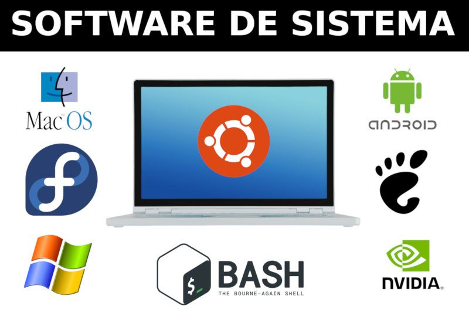
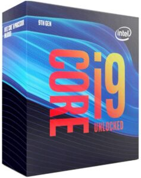
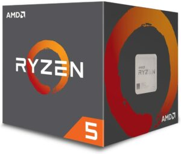

.
PARTES DE UNA COMPUTADORA
HARDWARE
Dispositivos de entrada
Los componentes y dispositivos del Hardware se dividen en Hardware Básico y Hardware Complementario
- El Hardware Básico: son las piezas fundamentales e imprescindibles para que la computadora funcione como son: Placa base, monitor, teclado y ratón.
- El Hardware Complementario: son todos aquellos dispositivos adicionales no esenciales como pueden ser: impresora, escáner, cámara de vídeo digital, webcam, etc.
Teclado
Es un dispositivo o periférico de entrada, en parte inspirado en el teclado de las máquinas de escribir, que utiliza una disposición de botones o teclas,
para que actúen como palancas mecánicas o interruptores electrónicos que envían información a la computadora.
Mouse (Ratón)
Es un dispositivo apuntador utilizado para facilitar el manejo de un entorno gráfico en una computadora.
Generalmente está fabricado en plástico y se utiliza con una de las manos.
Detecta su movimiento relativo en dos dimensiones por la superficie plana en la que se apoya,
reflejándose habitualmente a través de un puntero o flecha en el monitor.
Escáner
Se utiliza para introducir imágenes de papel, libros, negativos o diapositivas.
Estos dispositivos ópticos pueden reconocer caractéres o imágenes,
y para referirse a este se emplea en ocasiones la expresión lector óptico (de caracteres)

Micrófono
Periférico por el cual transmite sonidos que el ordenador capta y los reproduce,
los salva, etc. Se conecta a la tarjeta de sonido.

Webcam
Es una cámara de pequeñas dimensiones. Sólo es la cámara, no tiene LCD.
Tiene que estar conectada al PC para poder funcionar, y esta transmite las imágenes al ordenador.
Su uso es generalmente para videoconferencias por internet, pero mediante el software adecuado,
se pueden grabar videos como una cámara normal y tomar fotos estáticas.
Dispositivos de salida
Monitor
El monitor de computadora es un visualizador que muestra al usuario los resultados del procesamiento de una computadora mediante una interfaz.
Hay distintos tipos de monitores y pantallas, solo nombraremos los cuatro principales:
- De rayos catódicos
- Plasma
- Led
- Leds

Impresora
Una impresora es un periférico de ordenador que permite producir una gama permanente de textos o gráficos
de documentos almacenados en formato electrónico, imprimiéndolos en medios físicos,
normalmente en papel o transparencias, utilizando cartuchos de tinta o tecnología láser.

Componentes internos
Motherboard (Placa base)
Es una parte fundamental para montar cualquier computadora personal de escritorio o portátil o algún dispositivo.
Tiene instalados una serie de circuitos integrados, entre los que se encuentra el circuito integrado auxiliar (chipset),
que sirve como centro de conexión entre el microprocesador (CPU), la memoria de acceso aleatorio (RAM),
las ranuras de expansión y otros dispositivos.

Chipset (Circuito Integrado Auxiliar)
Es la médula espinal de la computadora, integrado en la placa base,
hace posible que esta funcione como eje del sistema permitiendo el tráfico de información entre el microprocesador
(CPU) y el resto de componentes de la placa base, interconectándolos a través de diversos buses que son:
el Northbridge (Puente Norte) y el Southbridge (Puente Sur).
El Northbridge o Puente Norte es un circuito integrado que hace de puente de enlace entre el microprocesador
y la memoria además de las tarjetas gráficas o de vídeo AGP o PCI-Express, así como las comunicaciones con el Puente Sur.
El Southbridge o Puente Sur (también conocido como Concentrador de Controladores de Entrada/Salida),
es un circuito integrado que coordina dentro de la placa base los dispositivos de entrada
y salida además de algunas otras funcionalidades de baja velocidad. El Puente Sur se comunica con la CPU a través del Puente Norte.

Unidad Central de Procesamiento (CPU)
La CPU (Central Processing Unit o Unidad Central de Procesamiento) puede estar compuesta por uno
o varios microprocesadores de circuitos integrados que se encargan de interpretar y ejecutar instrucciones
, y de administrar, coordinar y procesar datos, es en definitiva el cerebro del sistema de la computadora.
además, la velocidad de la computadora depende de la velocidad de la CPU o microprocesador que se mide en Mhz (
unidad de medida de la velocidad de procesamiento). Se divide en varios registros:
- Unidad de Control:La Unidad de Control es la encargada de controlar que las instrucciones se ejecuten,
buscándolas en la memoria principal, decodificándolas (interpretándolas) y que después serán ejecutadas
en la unidad de proceso.

- Unidad Aritmético-Lógica: Es la unidad de proceso donde se lleva a cabo la ejecución de las instrucciones
con operaciones aritméticas y lógicas.

- Unidad de Almacenamiento:La Unidad de Almacenamiento o Memoria guarda todos los datos que son procesados
en la computadora y se divide en Memoria Principal y Memoria Secundaria o Auxiliar.
- Memoria Principal o Primaria (RAM - ROM): En la Memoria Principal o Primaria
de la computadora se encuentran las memorias RAM, ROM y CACHÉ.
La Memoria RAM (Random Access Memory o Memoria de Acceso Aleatorio) es un circuito integrado o chip que almacena los programas,
datos y resultados ejecutados por la computadora y de forma temporal, pues su contenido se pierde cuando esta se apaga.
Se llama de acceso aleatorio - o de acceso directo - porque se puede acceder a cualquier posición de memoria
sin necesidad de seguir un orden. La Memoria RAM puede ser leída y escrita por lo que su contenido puede ser modificado.
La Memoria ROM (Read Only Memory o Memoria de sólo lectura) viene grabada en chips con una serie de programas por el fabricante
de hardware y es sólo de lectura, por lo que no puede ser modificada - al menos no muy rápida o fácilmente -
y tampoco se altera por cortes de corriente. En esta memoria se almacenan los valores correspondientes a las rutinas de arranque
o inicio del sistema y a su configuración.

La Memoria Caché es una memoria intermedia, o sea que presenta datos que se encuentran en la memoria RAM
pero al estar en la caché se acelera su acceso.
Memoria Secundaria (Discos Duros, Discos Flexibles, Pen Drive, etc.)
La Memoria Secundaria (también llamada Periférico de Almacenamiento) está compuesta por todos aquellos dispositivos
capaces de almacenar datos en dispositivos que pueden ser internos como el disco duro, o extraíble como los discos
flexibles (disquetes), CDs, DVDs, etc.
- Discos Duros: un disco duro o disco rígido (en inglés Hard Disk Drive, HDD) es un dispositivo de almacenamiento de datos
no volátil que emplea un sistema de grabación magnética para almacenar datos digitales. Se compone de uno o más platos
o discos rígidos, unidos por un mismo eje que gira a gran velocidad dentro de una caja metálica sellada.
Sobre cada plato, y en cada una de sus caras, se sitúa un cabezal de lectura/escritura que flota sobre una delgada
lámina de aire generada por la rotación de los discos.
La capacidad de los mismos nos indica la cantidad de datos que podemos almacenar en ellos,
actualmente medimos su capacidad por Gigabytes y Terabytes, van aproximadamente desde 160 Gb., hasta los 2 Tb.
Los discos duros también se diferencian por el tipo de conexión que utilizan,
tenemos los PATA (IDE), los SATA, los SATA II y los SATA III.
- Pen Drive : Es una memoria del tipo USB, también denominada flash drive. Es un dispositivo de almacenamiento de datos que incorpora
una interfaz USB para conectar a un puerto similar de la computadora quien la reconoce como una unidad mas de almacenamiento.
Se trata de un pequeño dispositivo para el almacenamiento de información digital.
Algunos modelos utilizan microdrives para el almacenamiento.

SOFTWARE
El Software es el soporte lógico e inmaterial que permite que la computadora pueda desempeñar tareas inteligentes,
dirigiendo a los componentes físicos o hardware con instrucciones y datos a través de diferentes tipos de programas.
El Software son los programas de aplicación y los sistemas operativos, que según las funciones que realizan pueden
ser clasificados en:
- Software de Sistema
- Software de Aplicación
- Software de Programación
Software de Sistema
Se llama Software de Sistema o Software de Base al conjunto de programas que sirven para interactuar con el sistema,
confiriendo control sobre el hardware, además de dar soporte a otros programas.
El Software de Sistema se divide en:
- Sistema operativo
- Controladores de dispositivos
- Programas utilitarios

Software de Aplicación
El Software de Aplicación son los programas diseñados para o por los usuarios para facilitar la realización de tareas
específicas en la computadora, como pueden ser las aplicaciones ofimáticas (procesador de texto, hoja de cálculo,
programa de presentación, sistema de gestión de base de datos...), u otros tipos de software especializados
como software médico, software educativo, editores de música, programas de contabilidad, etc.
Software de Programación
El Software de Programación es el conjunto de herramientas que permiten al desarrollador informático escribir
programas usando diferentes alternativas y lenguajes de programación.
Este tipo de software incluye principalmente compiladores, intérpretes, ensambladores, enlazadores,
depuradores, editores de texto y un entorno de desarrollo integrado que contiene las herramientas anteriores,
y normalmente cuenta una avanzada interfaz gráfica de usuario (GUI).
TIPOS DE CPU Y SUS CARACTERÍSTICAS
¿Qué es un CPU?
Se denomina CPU al Central Processing Unit, en español, Unidad Central de Procesamiento.
Se trata de un componente de gran importancia, principal del ordenador o computadora u otros dispositivos programable.
Este tiene la función de interpretar instrucciones que contienen diferentes programas y procesar determinados datos.

¿Para qué sirve un CPU?
El CPU es la pieza fundamental de todo dispositivo, es considerado el cerebro de un sistema.
En primer lugar, es el encargado de recibir e interpretar datos y ejecutar las secuencias de instrucciones
a realizar por cada programa valiéndose de operaciones aritméticas y matemáticas.
El CPU interpreta todos los datos que provienen del dispositivo, tanto de los programas como la información
que envía el usuario a través de aplicaciones.
Además, controla el buen funcionamiento de cada componente del sistema para que todas las acciones
sean realizadas en tiempo y forma.
El lenguaje de los CPU es un sistema de códigos a través del que se comunican las instrucciones que
debe ejecutar el procesador para el correcto funcionamiento del dispositivo.I
Tabla de tipos de CPU
Los tipos de CPU se clasifican según la cantidad de núcleos, y pueden ser:
- CPUs de un sólo núcleo. Fueron los primeros ordenadores y ofrecían una respuesta lenta a medida que se
querían realizar más acciones.
- CPUs de dos núcleos. Resultaron un gran salto en comparación a los procesadores de un solo núcleo,
por su capacidad de ejecutar diversas tareas a la vez, con un procesador especializado en el arranque
que facilitaba la tarea de los usuarios. Empleaba un código especial llamado SMT, Tecnología Multihilo Simultáneo.
Algunos procesadores aún utilizan este tipo de procesadores, aunque los programas y sistemas operativos actuales
requieren de procesadores mucho potentes.
- CPUs de cuatro núcleos. Son conocidos como quadcore. Su velocidad de respuesta es muy superior al de los CPUs de dos núcleos,
pudiendo ejecutar programas complejos, como de edición de fotografía o de video, sin problemas, incluso, mientras
se ejecutan otros programas en simultáneo, como un reproductor de música. A partir de los cuatro núcleos es un CPU indicado
para para los aficionados a los videojuegos
- CPUs de seis , ocho núcleos y más . Resultan de los proyectos más ambiciosos y se los denomina multimicroprocesadores.
Son capaces de resolver un sinfín de comandos y ejecutar miles de tareas a la vez.
En la siguiente tabla de muestra una tabla de los CPU's actuales más conocidos en 2023
| Tipo/Característica |
Intel I9 9900K |
Intel i7 10700K |
AMD Ryzen 3979x |
Intel Core I5 7400 |
AMD Ryzen 5 1600 |
| Imagen |
 |
|
|
|
 |
| Cantidad de núcleos |
8 |
8 |
32 |
4 |
6 |
| Frecuencia turbo máxima |
5.00 GHz |
5.10 GHz |
3.7 GHz |
3.00 GHz |
3.2 GHz |
| Frecuencia básica |
3.60 GHz |
3.80 GHz |
4.5 GHz |
3.50 GHz |
3.6 GHz |
| Memoria caché |
16 MB |
16 MB |
144 MB |
6 MB |
16 MB |
| Características especiales |
Canales de memoria que admite el procesador: Dual |
Su TDP es de 125 vatios |
DDR4 de cuatro canales con soporte ECC |
Controlador de gráficos potente |
Utiliza IA para acelerar el rendimiento |
¿QUÉ ES CMOS?
CMOS
CMOS -o semiconductor complementario de óxido metálico - es un elemento semiconductor utilizado en muchos ordenadores
modernos y otros dispositivos electrónicos. Este componente RAM estático es capaz de almacenar, procesar y transmitir
datos digitales y analógicos al mismo tiempo. Además de sus variadas posibilidades de aplicación, se caracteriza
por un consumo de energía comparativamente bajo y una menor sensibilidad a la radiación.
¿Cómo funciona un CMOS?
En un ordenador, CMOS se utiliza para parámetros BIOS de la placa base. Incluso si la máquina está desconectada de la
fuente de alimentación durante un largo período de tiempo o si el suministro de energía se interrumpe inesperadamente,
la memoria CMOS asegura que los datos necesarios se guarden (sobre todo la configuración del ordenador y su hardware).
En ella se almacenan todos los datos de configuración del sistema necesarios para su puesta en marcha.
Para ello, la CMOS alimenta el reloj del sistema.Si se interrumpe el contacto entre el ordenador y CMOS y
también se interrumpe la alimentación de la RAM de CMOS, todos los datos de configuración y las contraseñas
se reiniciarán después de un tiempo. Esto hará que el ordenador vuelva a su configuración por defecto.
Lo mismo ocurre en una actualización de la BIOS. De este modo, puedes iniciar la BIOS y ajustar el hardware
sin preocuparte o reaccionar a los mensajes de error mediante los pitidos de la BIOS.
CMOS actúa por separado del resto del suministro de energía.
¿QUÉ ES BIOS?
BIOS
Las siglas BIOS hacen referencia a las palabras Basic Input-Output System, que en español significa Sistema Básico de Entrada-Salida.
La BIOS es lo primero que se ejecuta al encender un ordenador, una tablet, un smartphone o cualquier otro tipo de aparato electrónico.
Si bien cuando no se trata de un ordenador no se suele llamar BIOS, en esencia es lo mismo.
La BIOS es una secuencia de códigos de ejecución (software) almacenada en un chip de la placa base (hardware)
que permite a misma reconocer qué está conectado a ella; procesador, tarjeta gráfica, RAM, unidades de almacenamiento…
y cualquier otra tarjeta adicional PCIe. Sin la BIOS tan solo tendríamos una placa base, no un ordenador.
¿Cómo funciona la BIOS?
La secuencia de inicialización del ordenador pasa por ejecutar la BIOS, donde se reconocen los distintos dispositivos que haya
instalados en la placa base. La BIOS sirve para que todos ellos se conecten a la placa base mediante software y quede así un
enlace y unas directrices establecidas, que serán usadas hasta que el ordenador se vuelva a iniciar.
La BIOS del ordenador proporciona detalles sobre los posibles fallos que puedan surgir al iniciar el PC,
sobre todo fallos de hardware. En ella se inscribe una secuencia sonora que debe emitir el speaker en caso de
fallar algún componente, dicha secuencia se puede consultar en el manual de la placa base en cuestión.
De esta manera, si falla la tarjeta gráfica, la RAM o el procesador emitirá unos u otros tonos.
¿QUÉ ES UEFI?
UEFI
Las siglas UEFI vienen de Unified Extensible Firmware Interface (es decir, interfaz de firmware extensible unificada).
Esta interfaz especial es, por así decirlo, como un sistema operativo en miniatura que se encarga de arrancar la mainboard
o placa base del ordenador y los componentes de hardware relacionados con ella. De este modo, la interfaz es la responsable
de que se cargue un gestor de arranque (bootloader) concreto en la memoria principal, que será el que iniciará las acciones
rutinarias de arranque. Este proceso suele dar como resultado la pantalla de inicio de sesión, en la que el usuario introduce
sus datos de acceso (nombre de usuario, contraseña) y tras la cual el ordenador está listo para ser usado para tareas
concretas (procesamiento de texto, por ejemplo).
¿Cómo funciona UEFI?
Para poder usar la interfaz UEFI, el ordenador necesita disponer de un firmware especial en la placa base.
Al encender el ordenador, el firmware utiliza la interfaz UEFI como una capa o layer operativa que actúa de intermediaria
entre el mismo firmware y el sistema operativo. Para que el modo UEFI se pueda iniciar antes de que el ordenador en sí haya
arrancado realmente, se implementa de forma permanente en la placa base, en un chip de memoria. Así, como parte integral
del firmware de la placa base, la programación UEFI se mantiene incluso cuando aún no circula la electricidad.
Para guardar configuraciones específicas del proceso de arranque (como, por ejemplo, datos de configuración o parámetros BIOS
como el orden de inicio) al apagar el ordenador, hoy en día se usa una NVRAM (Non-Volatile Random-Access Memory), es decir,
una memoria de acceso aleatorio no volátil. Puesto que esta memoria requiere muy poca energía, puede abastecerse a largo
plazo con una pila de botón ubicada en la placa base. Si, tras no haber usado el ordenador durante mucho tiempo,
la pila está vacía, puede haber problemas de arranque.